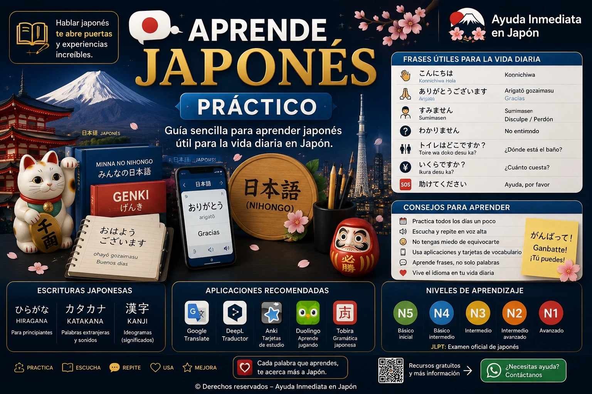
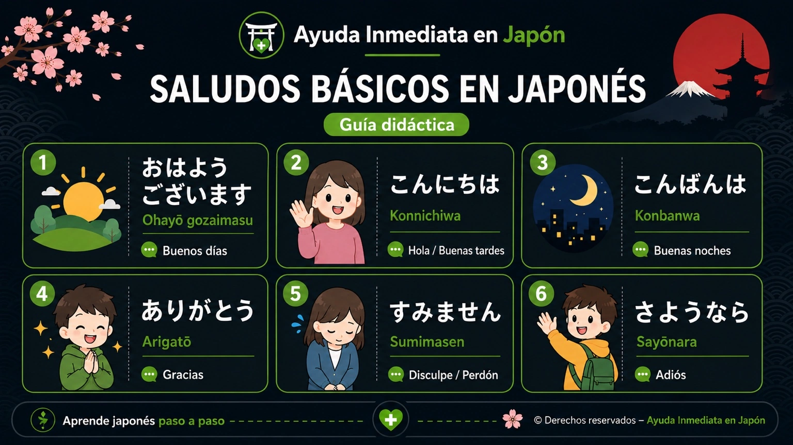
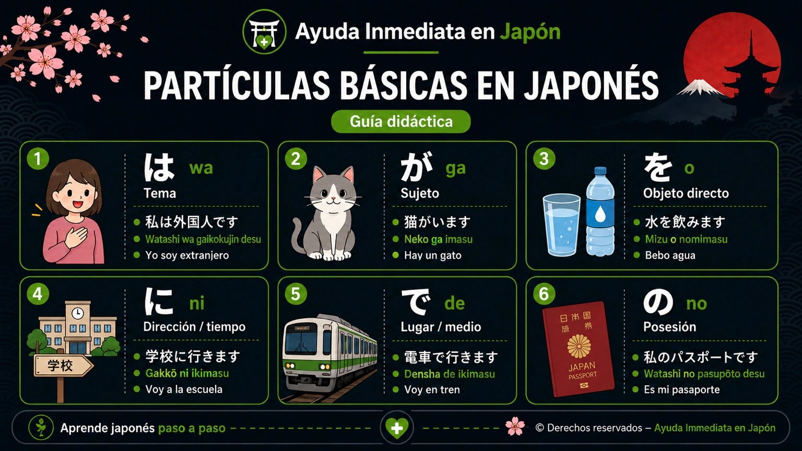
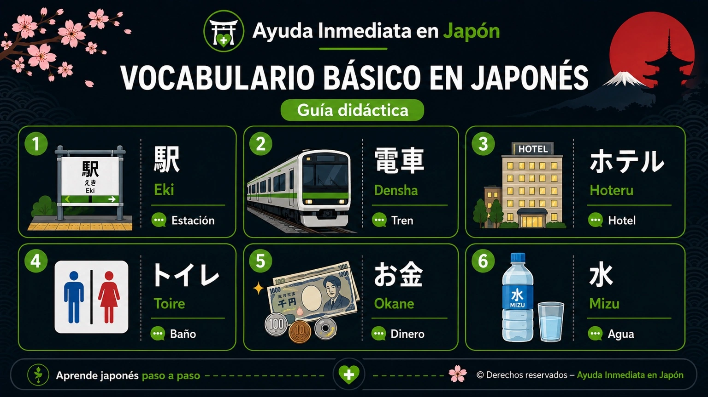

🇯🇵 Curso gratuito de japonés para principiantes
Empieza desde cero y sigue las lecciones en orden, con tres expresiones por tema, explicaciones, ejemplos y ejercicios resueltos. Los vídeos están organizados aparte.
🗣️ Aprende japonés práctico
Guía sencilla y ampliable para aprender japonés útil para la vida diaria en Japón.

🎓 Venir a Japón a estudiar japonés y trabajar
Si quieres estudiar en una escuela de japonés en Japón, consulta cómo elegir un instituto autorizado, solicitar el visado de estudiante, calcular costos y alojamiento, obtener becas y trabajar a tiempo parcial con el permiso correspondiente.
🏫 Escuelas de japonés y directorios oficiales
🇯🇵 ¿Por qué aprender japonés para vivir y trabajar?
Vivir en Japón sin dominar el idioma es posible, pero comprender japonés nos da independencia, seguridad y más oportunidades. No se trata de hablar perfectamente ni de renunciar a nuestra cultura. Se trata de poder entender, preguntar y expresar lo que necesitamos.
🏭 1. En el trabajo: seguridad y confianza
Comprender instrucciones, horarios, cambios de tarea, avisos de peligro y normas de seguridad ayuda a prevenir errores y accidentes. Si una indicación no quedó clara, es mejor pedir que la repitan que contestar «wakarimashita» (entendido) sin haber comprendido.
El idioma también facilita explicar problemas, plantear dudas, aprender nuevas tareas y aspirar a puestos con más responsabilidad. No garantiza un ascenso ni sustituye los derechos laborales.
🏥 2. Salud y emergencias
En una consulta médica, saber describir síntomas, alergias, medicamentos y antecedentes facilita la comunicación. Ante una emergencia, entender las indicaciones y saber pedir ayuda puede ser especialmente importante. Cuando el asunto sea complejo, solicita intérprete o apoyo profesional; no improvises con información que no comprendes.
🏢 3. Trámites y vida cotidiana
Leer avisos de la municipalidad, cartas del seguro, documentos escolares, instrucciones de transporte, contratos y normas de separación de basura permite resolver más asuntos sin depender siempre de otra persona. Antes de firmar un documento, pide una explicación o traducción si no lo entiendes.
🤝 4. Vecinos, costumbres y convivencia
Saludar, comprender normas del edificio o del barrio y preguntar con respeto puede reducir malentendidos. Conocer costumbres japonesas ayuda a convivir, pero adaptarse no significa aceptar abusos ni perder la propia identidad.
⚖️ 5. Malentendidos no son lo mismo que discriminación
Una instrucción mal comprendida puede causar conflictos, pero no todos los problemas son culpa del idioma. La discriminación, el acoso y el trato injusto existen y no deben justificarse por no hablar japonés. Si te sientes perjudicado, anota lo sucedido, conserva mensajes y busca orientación apropiada.
🗣️ Frases para empezar hoy
すみません、もう一度お願いします。
Sumimasen, mō ichido onegaishimasu.
Disculpe, ¿puede repetirlo?
ゆっくり話してください。
Yukkuri hanashite kudasai.
Por favor, hable despacio.
よく分かりません。
Yoku wakarimasen.
No lo entiendo bien.
確認してもいいですか。
Kakunin shite mo ii desu ka.
¿Puedo confirmarlo?
日本語を勉強しています。
Nihongo o benkyō shite imasu.
Estoy estudiando japonés.
📅 Un plan sencillo y sostenible
- Aprende cinco palabras relacionadas con tu trabajo o tu vida cotidiana cada semana.
- Practica una frase útil al día en una situación real.
- Escucha japonés breve, repite en voz alta y comprueba lo que entendiste.
- Guarda las palabras que no comprendiste y pregúntalas después.
- Avanza paso a paso: la constancia importa más que memorizar mucho de golpe.
🎬 Vídeo de Muse: «Vivir en Japón sin hablar japonés: el precio de no comprender». Encuentra el vídeo completo y el Short en nuestra Videoteca.
Esta guía es educativa y se ampliará con nuevas lecciones, situaciones laborales, expresiones y vídeos. No sustituye asesoría médica, legal o laboral.
🎬 Lección 1 · En el konbini
🎬 Japonés para la vida diaria
Lección 1 · Cómo comprar en un konbini
Nivel principiante · Aprende a pedir un producto y responder cuando te ofrecen una bolsa. Un konbini (コンビニ) es una tienda de conveniencia.
1. Pide el producto que necesitas
![Escena ilustrativa del vídeo: una clienta señala un producto en un konbini]()
これをください。
Kore o kudasai.
Esto, por favor.
Kore significa «esto», o marca el objeto y kudasai expresa una petición cortés. Puedes señalar lo que quieres comprar.
2. Cuando te preguntan si quieres bolsa
![Escena ilustrativa de la conversación en caja]()
袋はご利用ですか？
Fukuro wa goriyō desu ka?
¿Necesita una bolsa?
También puedes escuchar レジ袋は必要ですか？ (Rejibukuro wa hitsuyō desu ka?), que significa «¿Necesita una bolsa de compras?».
大丈夫です。
Daijōbu desu.
En esta situación: No hace falta, gracias.
Si necesitas una bolsa, responde お願いします (Onegai shimasu): «Sí, por favor». Si no, también puedes decir 袋はいりません (Fukuro wa irimasen): «No necesito bolsa».
3. Practica una conversación
Cliente: これをください。
Esto, por favor.
Dependiente: 袋はご利用ですか？
¿Necesita una bolsa?
Cliente: 大丈夫です。ありがとうございます。
No hace falta. Muchas gracias.
📝 Ejercicio: completa la frase
Para pedir «Esto, por favor», ¿qué palabra falta en これを＿＿＿?
Respuesta: ください (kudasai).
Información relacionada
Actualizado: 22 de noviembre de 2026 · Ayuda Inmediata en Japón
🇯🇵 ¿Qué es el japonés?
El japonés utiliza Hiragana, Katakana y Kanji.
Aprender poco a poco y usar frases prácticas ayuda mucho en trenes, hospitales, tiendas, restaurantes y trámites.
📘 Guía didáctica ilustrada
Lecciones visuales con japonés, pronunciación en rōmaji y significado en español.
Lección 1 · Saludos básicos


Toca la imagen para ampliarla. Si tu teléfono la abre en vez de descargarla, mantén presionada la imagen y elige «Guardar en Fotos» o «Guardar imagen», según tu navegador. Después usa «Volver a la guía».
Lección 2 · Partículas básicas


Toca la imagen para ampliarla. Si tu teléfono la abre en vez de descargarla, mantén presionada la imagen y elige «Guardar en Fotos» o «Guardar imagen», según tu navegador. Después usa «Volver a la guía».
Lección 3 · Vocabulario básico


Toca la imagen para ampliarla. Si tu teléfono la abre en vez de descargarla, mantén presionada la imagen y elige «Guardar en Fotos» o «Guardar imagen», según tu navegador. Después usa «Volver a la guía».
🇯🇵 Curso gratuito del Gobierno de Japón · TSUNAHIRO
TSUNAHIRO (つながるひろがる にほんごでのくらし) es una plataforma pública de aprendizaje de japonés para la vida cotidiana, ofrecida por la Agencia para Asuntos Culturales de Japón.
Está pensada especialmente para personas extranjeras que viven en Japón. Puedes practicar japonés mediante vídeos y situaciones habituales, como hacer compras, usar servicios y comunicarte en la comunidad.
📚 ¿Qué encontrarás?
- Lecciones organizadas por situaciones de la vida diaria.
- Vídeos y expresiones japonesas útiles.
- Una interfaz con apoyo en español para empezar con más facilidad.
El contenido, las opciones de idioma y los niveles disponibles pueden cambiar en el sitio oficial.
El botón abre el sitio oficial en otra pestaña. No necesitas pagar a Ayuda Inmediata en Japón para utilizarlo. Nuestra página solo te orienta y enlaza al recurso público.
🎓 Curso gratuito de NHK
NHK World Japan ofrece lecciones, audios y explicaciones sencillas.
🎓 Ir al curso gratuito de NHK🗣️ Saludos y frases básicas
Sumimasen: una palabra muy útil
Sumimasen: una palabra muy útil
すみません (Sumimasen) significa «disculpe» o «perdón». Sirve para pedir atención, pasar entre otras personas o disculparte por una pequeña molestia.
Para preguntar por una estación: すみません、駅はどこですか？ (Sumimasen, eki wa doko desu ka?).
Español: Buenos días.
Rōmaji: Ohayō gozaimasu.
おはようございます。
Español: Hola / Buenas tardes.
Rōmaji: Konnichiwa.
こんにちは。
Español: Buenas noches.
Rōmaji: Konbanwa.
こんばんは。
Español: Gracias.
Rōmaji: Arigatō gozaimasu.
ありがとうございます。
Español: Disculpe / Perdón.
Rōmaji: Sumimasen.
すみません。
🔤 Partículas básicas
は (wa): marca el tema.
私は学生です。
Watashi wa gakusei desu. · Yo soy estudiante.
が (ga): marca el sujeto.
猫がいます。
Neko ga imasu. · Hay un gato.
を (o): marca el objeto directo.
りんごを食べます。
Ringo o tabemasu. · Como una manzana.
に (ni): destino o tiempo.
学校に行きます。
Gakkō ni ikimasu. · Voy a la escuela.
で (de): lugar o medio.
電車で行きます。
Densha de ikimasu. · Voy en tren.
🧠 Vocabulario útil
かわいい · Kawaii · Lindo / tierno
おいしい · Oishii · Delicioso
たのしい · Tanoshii · Divertido
おもしろい · Omoshiroi · Interesante / gracioso
おおきい · Ōkii · Grande
ちいさい · Chiisai · Pequeño
たかい · Takai · Alto / caro
やすい · Yasui · Barato
🧳 Frases útiles para turistas
Español: No hablo japonés.
Rōmaji: Nihongo ga hanasemasen.
日本語が話せません。
Español: ¿Dónde está la estación?
Rōmaji: Eki wa doko desu ka?
駅はどこですか？
Español: Ayúdeme, por favor.
Rōmaji: Tasukete kudasai.
助けてください。
🔢 Números, dinero y precios
Para comprar o pagar en Japón, primero aprende los números y la palabra 円 (en), que significa yen.
| Número | Japonés | Pronunciación |
|---|---|---|
| 1 / 2 / 3 | 一 / 二 / 三 | Ichi / ni / san |
| 4 / 5 / 6 | 四 / 五 / 六 | Yon / go / roku |
| 7 / 8 / 9 / 10 | 七 / 八 / 九 / 十 | Nana / hachi / kyū / jū |
| 100 / 1.000 / 10.000 | 百 / 千 / 一万 | Hyaku / sen / ichiman |
¿Cuánto cuesta?
Ikura desu ka?
いくらですか？
¿Puedo pagar con tarjeta?
Kādo de haraemasu ka?
カードで払えますか？
¿Aceptan efectivo?
Genkin wa tsukaemasu ka?
現金は使えますか？
No necesito bolsa.
Fukuro wa irimasen.
袋はいりません。
Consejo: en Japón los precios suelen mostrar «税込» (impuestos incluidos) o «税抜» (sin impuestos).
📅 Días, fechas y horas
Para citas médicas, trabajo y transporte conviene reconocer los días y preguntar por la hora.
| Español | Japonés | Rōmaji |
|---|---|---|
| Lunes / martes | 月曜日 / 火曜日 | Getsuyōbi / kayōbi |
| Miércoles / jueves | 水曜日 / 木曜日 | Suiyōbi / mokuyōbi |
| Viernes / sábado / domingo | 金曜日 / 土曜日 / 日曜日 | Kinyōbi / doyōbi / nichiyōbi |
| Hoy / mañana / ayer | 今日 / 明日 / 昨日 | Kyō / ashita / kinō |
¿Qué hora es?
Ima nanji desu ka?
今何時ですか？
¿A qué hora empieza?
Nanji kara desu ka?
何時からですか？
Tengo una cita mañana a las diez.
Ashita jūji ni yoyaku ga arimasu.
明日10時に予約があります。
Ejemplo: 15:30 se dice «gogo sanji han» (午後3時半). «Gozen» (午前) significa antes del mediodía y «gogo» (午後), después.
🚆 Transporte y estaciones
En estaciones busca las palabras 改札 (kaisatsu, torniquetes), 乗り場 (noriba, lugar de embarque) y 出口 (deguchi, salida).
¿Dónde está el andén número dos?
Ni-ban noriba wa doko desu ka?
2番乗り場はどこですか？
¿Este tren va a Kioto?
Kono densha wa Kyōto ni ikimasu ka?
この電車は京都に行きますか？
¿Dónde hago transbordo?
Doko de norikaemasu ka?
どこで乗り換えますか？
¿Dónde está la parada del autobús?
Basu-tei wa doko desu ka?
バス停はどこですか？
Comprueba el destino, la línea y si el tren es local (普通), rápido (快速) o expreso. No todos paran en las mismas estaciones.
🍱 Restaurantes, compras y tiendas
Cómo pedir la cuenta
Cómo pedir la cuenta
Para pedir la cuenta: お会計お願いします。 (Okaikei onegai shimasu): «La cuenta, por favor».
En algunos restaurantes se paga en la caja de la entrada. Si tienes un comprobante, llévalo contigo. Para preguntar si puedes pagar con tarjeta: カードで払えますか？ (Kādo de haraemasu ka?).
En muchos restaurantes puedes señalar una fotografía del menú. También es útil aprender a pedir sin picante o preguntar por ingredientes.
Esto, por favor.
Kore o onegaishimasu.
これをお願いします。
¿Tienen menú en inglés?
Eigo no menyū wa arimasu ka?
英語のメニューはありますか？
Sin picante, por favor.
Karaku shinaide kudasai.
辛くしないでください。
La cuenta, por favor.
Okaikei o onegaishimasu.
お会計をお願いします。
¿Puedo probarme esto?
Shichaku shite mo ii desu ka?
試着してもいいですか？
Si tienes alergias alimentarias, lleva una explicación escrita con los ingredientes exactos; una traducción automática puede ser insuficiente.
🏥 Hospital, farmacia y emergencias
Para recibir atención, describe el síntoma, desde cuándo empezó y si necesitas un intérprete. En una emergencia grave, llama al 119 para ambulancia o bomberos; para policía, al 110.
Me duele aquí.
Koko ga itai desu.
ここが痛いです。
Tengo fiebre.
Netsu ga arimasu.
熱があります。
Necesito una ambulancia.
Kyūkyūsha o onegaishimasu.
救急車をお願いします。
¿Hay alguien que hable español?
Supeingo o hanaseru hito wa imasu ka?
スペイン語を話せる人はいますか？
Soy alérgico/a a este medicamento.
Kono kusuri ni arerugī ga arimasu.
この薬にアレルギーがあります。
Si es una urgencia real, no esperes a poder pronunciar todo correctamente: muestra la frase escrita o pide ayuda a alguien cercano.
📍 Direcciones y ubicación
Reconoce las indicaciones que verás en estaciones, edificios y calles.
| Español | Japonés | Rōmaji |
|---|---|---|
| Derecha / izquierda | 右 / 左 | Migi / hidari |
| Recto | まっすぐ | Massugu |
| Entrada / salida | 入口 / 出口 | Iriguchi / deguchi |
| Cerca / lejos | 近い / 遠い | Chikai / tōi |
¿Dónde está el baño?
Toire wa doko desu ka?
トイレはどこですか？
¿Puede mostrarme en el mapa?
Chizu de oshiete moraemasu ka?
地図で教えてもらえますか？
¿Está lejos de aquí?
Koko kara tōi desu ka?
ここから遠いですか？
🈶 Kanji frecuentes
No necesitas memorizar todos los kanji para empezar. Estos aparecen con frecuencia en lugares públicos.
| Kanji | Significado | Lectura habitual |
|---|---|---|
| 駅 | Estación | Eki |
| 入口 / 出口 | Entrada / salida | Iriguchi / deguchi |
| 病院 | Hospital | Byōin |
| 薬局 | Farmacia | Yakkyoku |
| 禁止 | Prohibido | Kinshi |
| 注意 | Precaución | Chūi |
| 非常口 | Salida de emergencia | Hijōguchi |
| 営業中 / 準備中 | Abierto / preparando (no atendiendo) | Eigyōchū / junbichū |
La lectura puede cambiar según la palabra. Usa el significado y el contexto como primera ayuda.
📱 Frases para mostrar en pantalla
Si no puedes pronunciar la frase, pulsa «Mostrar en grande» y enseña la pantalla. Estas frases son de uso cotidiano.
Disculpe, no entiendo japonés.
Sumimasen, nihongo ga wakarimasen.
Por favor, hable más despacio.
Motto yukkuri hanashite kudasai.
¿Puede escribirlo?
Kaite moraemasu ka?
Necesito ayuda.
Tasukete kudasai.
Al pulsar una frase se abre en pantalla grande. Toca «Cerrar» para regresar a la lección.
📚 Libros y folletos recomendados
Material básico
Hiragana, katakana, vocabulario, partículas y frases de la vida diaria.
Material práctico para residentes
Trenes, hospitales, ayuntamiento, trabajo, compras y emergencias.
🌍 Traductores japonés ↔ español: texto, voz e imágenes
¿Necesitas traducir del japonés al español o del español al japonés? Estas herramientas permiten consultar textos y, según la aplicación o dispositivo, usar la cámara o la voz. Verifica las traducciones importantes, especialmente en trámites médicos, legales o laborales.
🔵 Google Translate 🟢 DeepL 🟡 Papago💡 Consejo importante
📚 Dónde estudiar japonés: recursos gratuitos y aplicaciones
No necesitas pagar para empezar a aprender japonés. Seleccionamos recursos según su utilidad para hispanohablantes, especialmente quienes viven o viajan por Japón. Los enlaces llevan a sus páginas oficiales.
🏅 Irodori · Fundación Japón — gratis
Materiales gratuitos con audios para aprender el japonés de la vida cotidiana y del trabajo en Japón. Existe una edición en español de los materiales. Recomendado para residentes y personas que van a trabajar en Japón.
📖 Consultar ediciones de Irodori🏛️ Minato · Fundación Japón — cursos gratuitos y otros de pago
Plataforma oficial con cursos estructurados de japonés, entre ellos cursos relacionados con Marugoto. Filtra por idioma, nivel, modalidad y precio: no todos los cursos están disponibles en español ni todos son gratuitos.
🎓 Explorar cursos de Minato🗣️ NHK WORLD-JAPAN — gratis
Lecciones de japonés con explicaciones y contenidos de audio para principiantes. Muy útil como complemento para escuchar y practicar expresiones frecuentes.
🎧 Consultar japonés de NHK📱 Busuu — gratis con opción Premium
Curso de japonés en español con lecciones interactivas y un plan básico gratuito. Puede mostrar anuncios y reserva algunas funciones para los planes de pago.
📝 Conocer Busuu📱 Yukigo — gratis con opción Pro (en evaluación)
App que ofrece explicaciones en español desde escritura básica hasta preparación JLPT. Según su desarrollador, permite tres lecciones nuevas diarias después de la primera semana y dispone de funciones Pro de pago. Recibimos una oferta de acceso Pro gratuito durante un año para evaluarla; todavía no constituye una recomendación definitiva.
🔎 Conocer YukigoQué elegir: para vivir o trabajar en Japón, empieza por Irodori; para seguir un curso estructurado, explora Minato; para practicar escucha, NHK; para lecciones cortas en una aplicación, compara los planes gratuitos de Busuu y Yukigo. No compartimos enlaces de afiliación en esta selección.
Información revisada en noviembre de 2026. Las funciones y condiciones de las aplicaciones pueden cambiar. Nuestro curso gratuito de Ayuda Inmediata en Japón sigue siendo independiente.
📱 Herramienta complementaria: Yukigo (en evaluación)
Practica japonés por tu cuenta con Yukigo
Yukigo es una aplicación externa para estudiar japonés en español. Su creador indica que incluye kana, kanji con escritura a mano, vocabulario, gramática, lectura, escucha, pronunciación y preparación para el JLPT (N5–N1).
Acceso gratuito: según el desarrollador, la primera semana permite estudiar sin límite de lecciones nuevas; después, hasta tres lecciones nuevas al día. Incluye repaso diario y acceso limitado a lecturas, audios y ejercicios.
Versión Pro: ofrece más ejercicios y materiales sin esos límites mediante un plan de pago. Consulta las condiciones y los precios actualizados dentro de la aplicación antes de contratar.
Transparencia: el desarrollador nos ha ofrecido un año de acceso Pro gratuito para evaluarla. Todavía no hemos probado y verificado todas sus funciones; su aparición aquí no constituye una recomendación definitiva ni forma parte de nuestro curso gratuito.
Recurso opcional de terceros. Puedes seguir nuestro curso gratuito sin instalar esta aplicación.
📅 Última actualización: 5 de noviembre de 2026
© 2026 Derechos reservados – Ayuda Inmediata en Japón